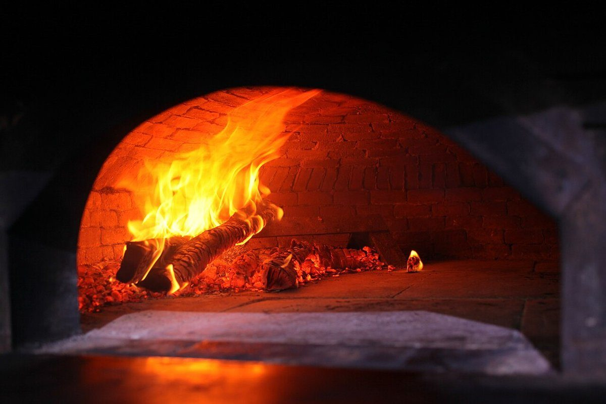
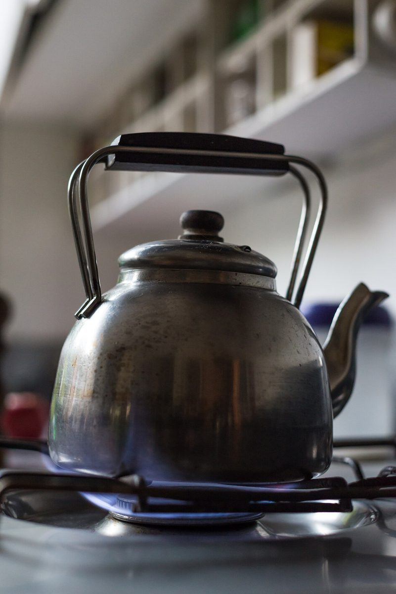

- 一 黒#17120F
- 二 炎#E8601C
- 三 熾#B52E14
- 四 灰#D9D3C8
制作側の連想
熾から灰へ、四つの炭色
店名の由来は分かりません。制作側は「おくど」という響きから、台所のかまど(竈)を連想しました。そこでこのページは、炭が燃えて変わっていく色(黒→炎→熾(おき)→灰)を四つの章に見立てて組んでいます。お店の理念・由来・実際のお店の設備や提供内容とは無関係の、制作側の連想です。
一 黒
火のつく前の、黒と灰色の質感。


二 炎
いちばん明るい、橙と青の火。



三 熾
赤く静かに続く、深い茶の色。



四 灰
白く静まる、明るい灰の色。


ご案内
お店のこと(確認できたものだけ)
| 所在地 | 〒491-0036 愛知県一宮市桜１丁目８−１ |
|---|---|
| 電話 | 0586-80-4110(Googleマップ記載) |
| 営業時間 | 準備中 |
| 定休日 | 準備中 |
| ご予約 | 準備中 |
| 駐車場 | 準備中 |
| SNS | Instagram @cafe_okudosan |